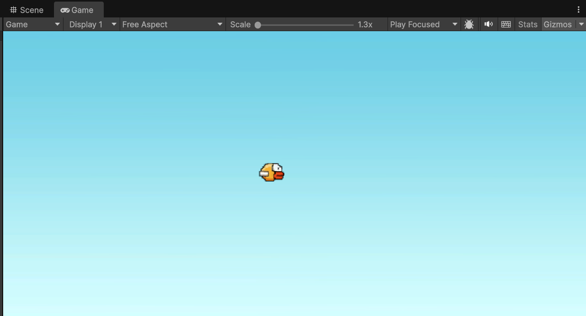
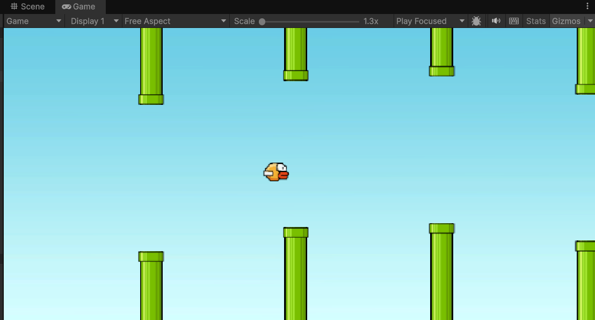
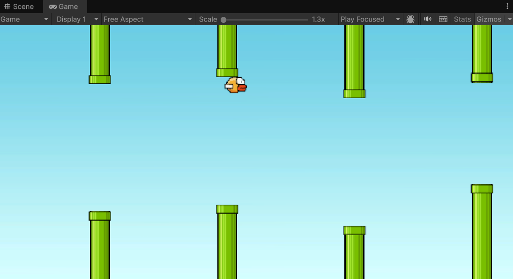

FLAPPY
BIRD.
01 / THE IDEA
A game about
FlappyBird is an arcade game about precision, timing, and navigating through obstacles.
I designed the core gameplay loop, collision physics, and difficulty balance.
YOUTUBE GAMEPLAY VIDEO — REPLACE VIDEO_ID IN THIS FILE
SCREENSHOT 01

SCREENSHOT 02

SCREENSHOT 03

NEXT PROJECTRun/Jump/Climb Mechanics ↗